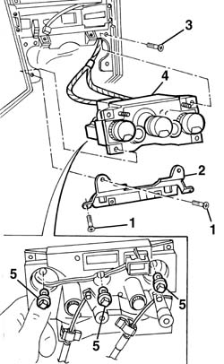

5020B28 air conditioner symbol light bulb/s - includes control panel r+r
- Path
- Procedures > 50 AUXILIARY UNITS > 5020 HEATER > 5020B heater controls > 5020B28 air conditioner symbol light bulb/s - includes control panel r+r
- Kind
- repair procedure (removal / refitting; the operation number is the code)
- Applies to
- all engines; all production periods
- Interactive page
- https://sloeber94.github.io/elrnDB-a156/en/#/3238289
Applies to: all engines; all production periods
 Removing
Removing
 Refitting
Refitting7040A65 passenger compartment box lock , one , r r (right and left)
5040D22 control (one) of air conditioner control support - arrange
2125C24 gear lever knob - r + r
7040A60 under facia trim - r+r
3380A44 handbrake/linkage protection - r+r
7040L28 tunnel switch panel - r r
1. Loosen the screws
2. Remove the flask
3. Loosen the screws
4. Dispace the comand support
5. Turn and remove the involved lamp

Applies to: all engines; all production periods
Refitting
RemovingVerify that the lamps are efficient
Install in its seat the involved lamp
Install the comand support and fix it with the screws
Install the flask and fix it with the screws
7040L28 tunnel switch panel - r r
3380A44 handbrake/linkage protection - r+r
7040A60 under facia trim - r+r
2125C24 gear lever knob - r + r
5040D22 control (one) of air conditioner control support - arrange
verify the fuctionality of the lamps
7040A65 passenger compartment box lock , one , r r (right and left)
Topics linked from this page (9)
- 2125C24 gear lever knob - r + r
- 3380A44 handbrake/linkage protection - r+r
- 5040D22 control (one) of air conditioner control support - arrange
- 5570T80 car radio unit - r+r
- 7040A60 under facia trim - r+r
- 7040A65 passenger compartment box lock , one , r r
- 7040L20 tunnel trim - r r
- 7040L28 tunnel switch panel - r r
- 7065C42 ashtray (one) r+r